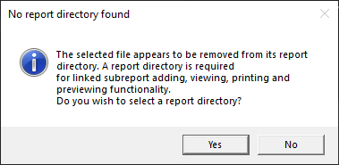

FS Report Designer
Der FS Report Designer ist für den Einsatz mit Framework Studio konzipiert. Es handelt sich um den DevExpress® Report Designer welcher für diesen Zweck entsprechend optimiert und angepasst wurde.
Standardmäßige Funktionalitäten sind in dieser Doku nicht eingeschlossen - hierzu sollte die offizielle Dokumentation von DevExpress® beansprucht werden.
Controls
Zusätzlich zum sehr umfangreichen Angebot von DevExpress® werden im FS Report Designer zusätzliche Controls angeboten:
- Fold Mark Settings - Falz-Marken für Briefe
- Carry Forward - Übertrag von vorheriger Seite
- Embedded / Linked Subreports
Besonderheiten beim Umgang mit Dateien
Regulär wird eine Report-Datei aus Framework-Studio heraus bearbeitet. Dabei startet Framework-Studio den Report-Designer für die entsprechende Datei und stellt sicher, dass die im Report DocumentType definierten Datasources korrekt und vollständig angeboten werden. Wird der Report-Designer nach der Bearbeitung geschlossen, überträgt Framework Studio diese eine geänderte .repx-Datei (inklusive der darin enthaltenen Embedded Subreports) wieder zurück in den Report Document Type und in das Repository.
Dadurch ergeben sich einige Besonderheiten beim Umgang mit Dateien.
Die Registerkarte des initial durch Framework Studio geöffneten Haupt-Reports kann nicht geschlossen werden. Es muss der komplette Report Designer beendet werden.
Werden zusätzlich Dateien aus dem Datei-System geöffnet, dann werden diese als Readonly angezeigt. Gleiches gilt beim Öffnen eines Linked Subreports.
Werden Dateien als Readonly geöffnet, dann wird dies in der Registerkarte durch ein kleines Schloss gekennzeichnet und eine Meldung mit einem Hinweis angezeigt. Um möglichst viel Bedienkomfort zu gewährleisten ist die Bearbeitung nicht eingeschränkt. Bei Bedarf müssen vorgenommene Änderungen mit Save As... in eine neue Datei gespeichert werden.
Mit Save As... kann ein Embedded Subreport aus dem Haupt-Report "herausgelöst" und eine Kopie als eigenständige Datei gespeichert werden. Das Embedded Subreport Control des Haupt-Reports und der darin gespeicherte Subreport bleiben davon unberührt.
Eine New File Operation steht nicht zur Verfügung. Neue Dateien müssen aus Framework Studio heraus erzeugt werden.
Standalone-Ausführung der FSReportDesigner.exe
Die FS-Customizations werden via eines Launchers (FSReportDesigner.exe) auf den standardmäßigen Report-Designer angewandt. Aus diesem Grund müssen DevExpress Reports über diesen Launcher editiert werden.
Die entsprechende .exe ist auf oberster Ebene im Installationsverzeichnis zu finden, also "\Framework Studio X.Y.0.0\FSReportDesigner.exe".
Diese .exe lässt sich auf beliebige Weise öffnen (unten genauer erläutert). Wenn die geöffnete Datei sich nicht in einem Report-Verzeichnis befindet und der Pfad zu diesem nicht als Argument angegeben wurde, erscheint folgende Meldung:

"Yes" öffnet einen Verzeichnis-Auswahldialog, in dem sich ein Report-Verzeichnis auswählen lässt. Falls es sich um eine valide Auswahl handelt, wird der Report so gehandhabt, als ob er sich in diesem Verzeichnis befinden würde. Alle vom Report-Verzeichnis abhängigen Features stehen dann zur Verfügung.
"No" oder ein Abbruch der Auswahl startet den Designer völlig standalone. Custom Controls stehen noch zur Verfügung, aber Features, die von Interoperabilität mit anderen Report-Dateien abhängen (z.B. Open Crystal Report) sind nicht nutzbar.
Direkter Aufruf
Bei einem direkten Aufruf der FSReportDesigner.exe, z.B. per Doppelklick, oder beim Aufruf mit einer ungültigen .repx-Datei, wird ein Auswahldialog für eine .repx geöffnet.
Ein Öffnen einer .repx-Datei per Windows file association oder durch drag & drop einer .repx-Datei auf die .exe öffnet die besagte Datei und verhält sich ansonsten identisch.
Important
Bei einem Standalone-Aufruf des Report-Designers steht normalerweise keine Datenquelle zur Verfügung. Um sie trotzdem nutzen zu können, müssen die Argumente "--type", "--assembly" und "--folder" angegeben sein.
Kommandozeilen-Argumente
Der FSReportDesigner ist von der Kommandozeile aus granularer aufrufbar. Die folgenden Argumente stehen zur Verfügung:
--report: Muss in der Kommandozeile angegeben werden. Definiert den voll qualifizierten Pfad zu der zu editierenden .repx-Datei.--crystal(optional): Voll qualifizierter Pfad der Crystal Reports Datei, um features wie "Open Crystal Report" zu ermöglichen.--designer(optional): Bestimmt den voll qualifizierten Pfad zur .exe des Crystal Designers, um features wie "Open Crystal Report" zu ermöglichen.--type: Der voll qualifizierte type name der Datenquelle, z.B. 'NV.ERP.MM.Sales.rptSalesDocument_Rptx'--assembly: Der Name der assembly-Datei, die den bereits angegebenen Typen beinhaltet, in diesem Beispiel also 'NV.ERP.MM.Sales_RDT.dll'.--folder: Das Verzeichnis, welches die benötigten Assembly-Dateien beinhaltet - üblicherweise '\bin\' im Compile-Verzeichnis.-l/--locked(optional): Setzt den Report in einen readonly-modus, welcher Änderungen und das Speichern verhindert.